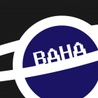

Adam Kimball

Adam Kimball | MP351[x2] & 352[x1]
kimbalac@clarkson.edu
Progress this semester:
Lightning Talks:
- arandr/xrandr display utilities
- The Daily Programmer subreddit
- ADUni: A free digital university
- Flash Player, and why it's recommended to avoid it on non-Windows platforms
- Fresh Player: Pepperflash for Firefox
- Elevator Saga: Learn JavaScript the fun way!
- File Manager talk (Presentation of a whole bunch of alternative/minimal file managers)
- Telnet Antics -- various webpages and responses via telnet and HTTP 1.1
- Visual Studio Code: An alternative code editor with gdb integration and extension support!
- Microsoft Open Source involvement, and Linux distribution
- ...and more that got lost along the way!
Server Room:
- Maintainer of Comm, which currently runs an XMPP and Mumble server
- Various bits of cleanup/organization, particularly involving the file cabinets
- Helped set up/troubleshoot aspects of the VM machines on several occasions
- Creator/maintainer of the core backup server
- Assistance with cable cleanup and routing
- General troubleshooting throughout the semester and tracking down/notifying the right people
- Question box/guide for some of our newer members who needed help setting things up in the server room
Backup System:
- Elephant: Our cobbled-together but entirely viable backup server built from scraps:
- A spare i7 and power supply from our previous generation of lab machines
- A spare motherboard from a lab machine two generations back
- One 120GB HDD pulled from an old lab machine
- Five 3TB HDD's pilfered from our generously donated rack-mount NAS devices
- A fan from the CAMP technology disposal area
- ...all mounted in one of the oldest 3U server cases we have, whose LEDs don't work!
- Despite all of this, it's actually a pretty robust system. It should go for a while!
- Set up the 120gb drive with a basic debian install and setup user accounts
- Helped set up DNS resolution to elephant@cslabs
- Configured the 3TB drives to work in RAID6 via mdadm
- Created a backup user with read/write to only the backup folder at the root of the RAID array
- Generated ssh keys for authentication of the backup user, so it doesn't need to be tied in to talos
- Worked out rsync commands to pull data over ssh with preserved disk sparsity and resume on fail
- Set up a basic cron job on Metapod to backup all user directory files
- Created resume and suspend scripts for the machines on our VM hosts
- Modified the above to walk through each VM, suspend it, back it up, and resume it[in progress]
- Hooked the above into a cron job[in progress]
- Still trying to track down Graham to get Talos backups encrypted/stored
- Documentation of each step in the process[Still pending formatting/upload to docs]
Workshops:
- Contributor to CDC [Lecture and active participant]
- Ran Weekly Programming Challenge workshops
- Ran for the majority of the semester, 3-5PM on Sundays
- Participants scored on various criteria: speed, team size, whether or not they'd used the language, etc
- Covered a variety of questions -- from the ACM, from the internet, and of my own invention
- A variety of topics were covered, from obscure programming language use to speed programming
- Had a nice skew of participants: People from Freshmen through to Senior year attended
- Participating in several workshops/projects:
- Robigalia: Rust for SeL4 [Attendance, minix threads, website design]
- Draft review/workshop attendance for ziltoid (run by Corey Richardson)
- Vim Usability Workshop attendance (run by Benjamin Lannon)
- 7 Hour Roguelike competition (run by Corey Richardson)
- ACM Programming Competition Participant (And I didn't come in last!)
Misc:
- Re-built several of the current lab machines, as well as the entire VR Lab
- Writing Rust-Multiprime distributed prime generator for beowulf clusters
- Have helped several freshmen to lean CS141 concepts and application
- General student assistance!
- Open House: [Attendance, talk]
- Lots of general assistance w/ lab machines and setup/cleaning
- Helped analyze, organize, document, and remove old machines where necessary
- Handled COSI office supplies -- order placement for ink, staples, etc
- Handled or assisted with catering for several COSI events
- Continual clean and care of the labs
- Handled the COSI Cubbies
- Removal/distribution of old computers and GPUs